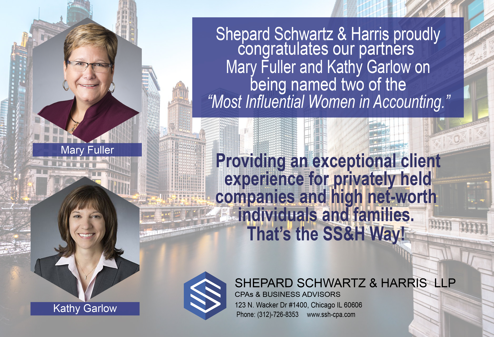
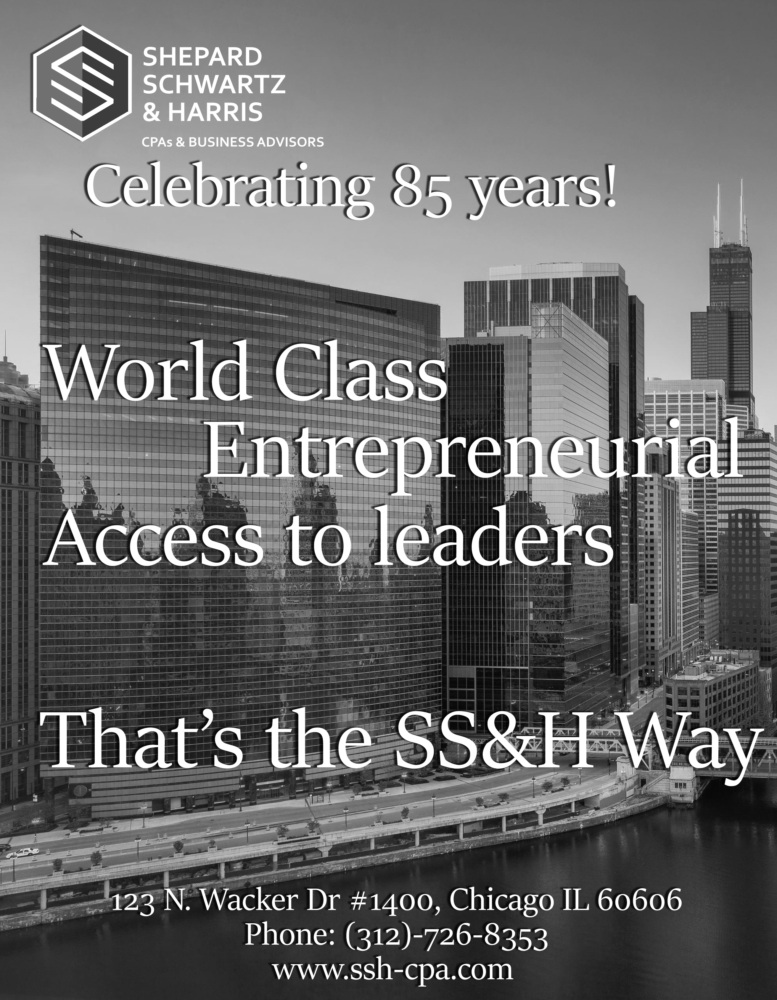

Shepard Schwartz & Harris Advertisement
An accounting firm first reached out to me to make an advertisement
to be placed in the Crains Business magazine congradulating two of
their partners being named "The most Influential Women in Accounting".
Making their pictures hexigon shaped to mirror their logo was a detail they appreciated.
I was contacted again to make a full page black and white advertisement
celebrating their 85th year. The clients and I discussed font and text
placement so nothing would clash with the background.